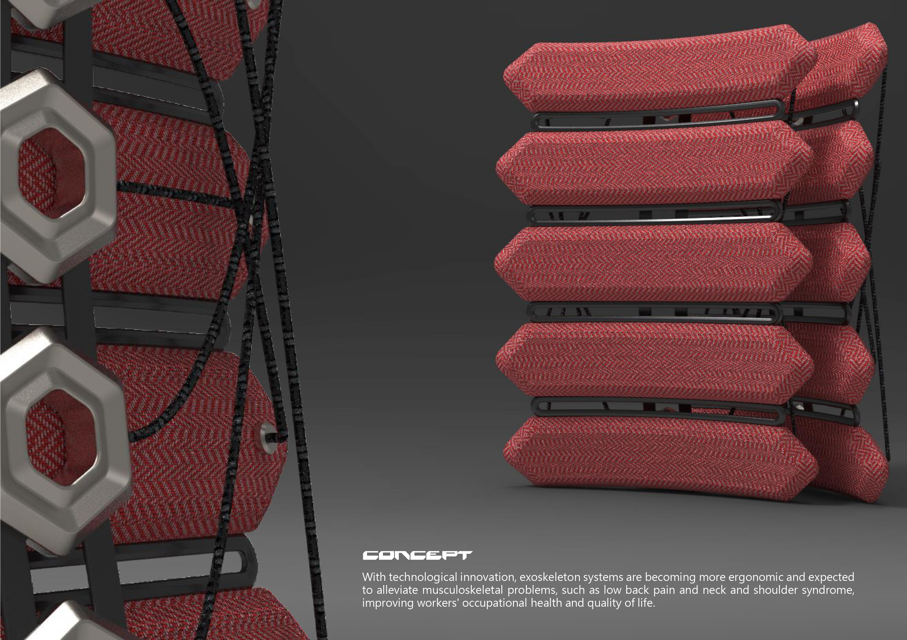
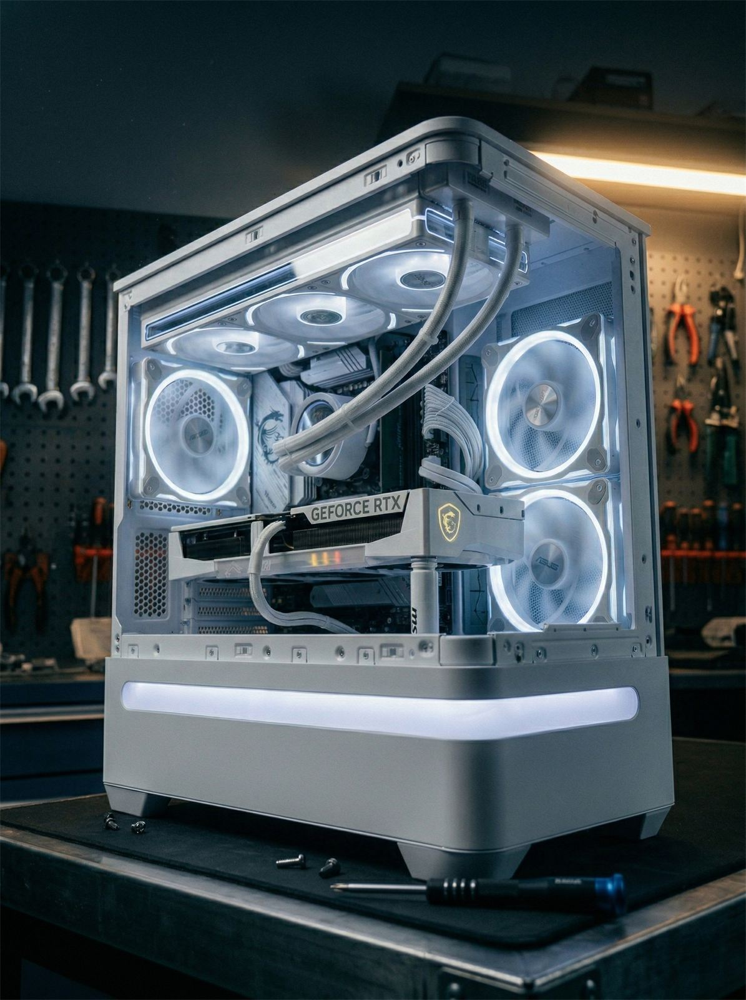
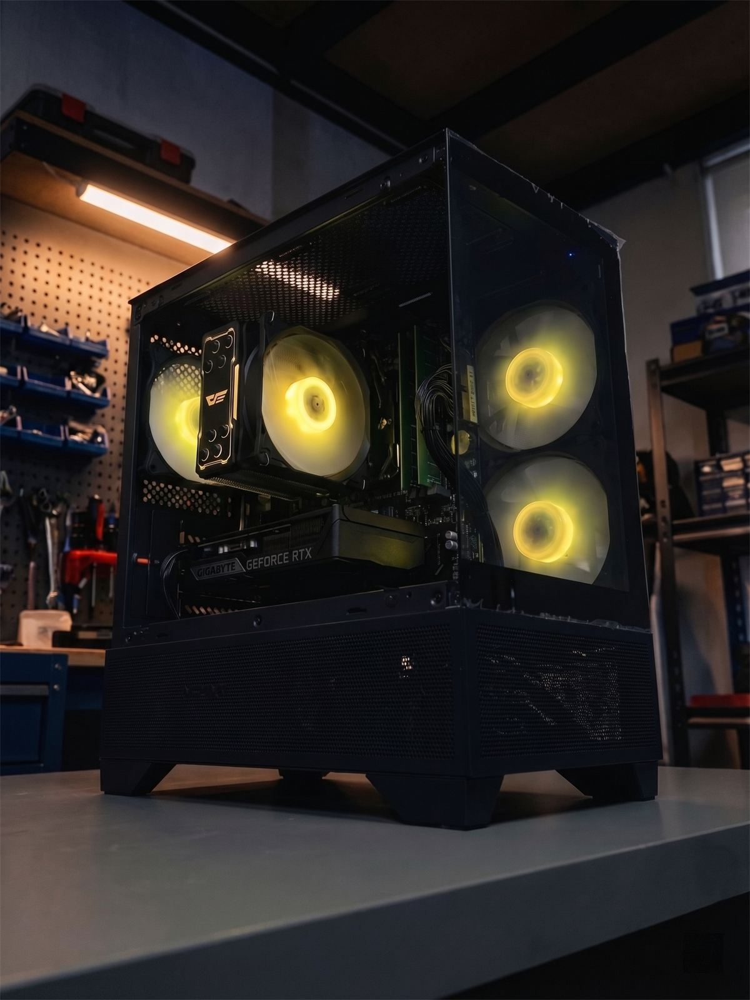
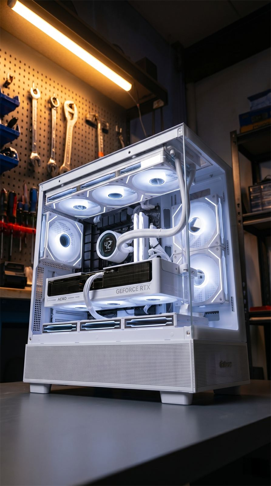

Crafting form, logic, and digital systems.
研究生與獨立設計師，專注於複雜曲面工藝、人因工程結構與現代化前端互動體驗。
Selected Projects

Floating Life
新一代設計展空間策展與全套視覺識別規劃，探討空間動線與秩序美學。

MASK
2022 疫情期間設計的賽博龐克風格防護面罩，整合雙環形呼吸閥、主動式通風結構與模組化濾網替換機能，兼顧防護、舒適與前衛美學。

L1 RACING
融合賽車曲面與 Café Racer 結構，運用 Rhinoceros 雕琢的流線幾何與散熱設計。

Gain Support Device
針對現代職場人因工程與脊椎健康危害所開發的輕量化外骨骼腰部輔具。

GEOMETRY Mobile Chandelier
運用幾何分割與對稱美學打造的模組化吊燈。結合精緻的結構設計與光影效果，展現極簡主義與空間藝術的完美結合。

組裝電腦作品 01
結合 AI 創作技術與高端電腦組裝的融合專案，展現個性化 Gaming PC 的設計美學與功能完整性。

組裝電腦作品 02
這台看起來低調？但實力一點都不低調。3萬預算能組到什麼程度？遊戲順跑、日常不卡、剪輯也能撐住 💻黑化機身＋黃光燈效就是那種——不張揚但很能打的配置

組裝電腦作品 03
結合 AI 創作技術與高端電腦組裝的融合專案，展現個性化 Gaming PC 的設計美學與功能完整性。

QUANT CORTEX v11.3 // LIQUIDATION RADAR
即時追蹤加密貨幣市場清算動態，提供量化視角的市場洞察工具。
About
我是李柏昇 (Lee Po-Sheng)，一名致力於跨界整合的獨立設計師與工業設計研究生。我的創作思維穿梭於實體與數位之間，涵蓋產品開發、展覽策劃與前端互動設計。在實體端，我擅長以 Rhinoceros 構築複雜曲面，並將嚴謹的人因工程深度導入穿戴式裝置與醫療輔具之中；近年更將此設計脈絡延伸至數位載體，透過程式碼作為新維度，打造兼具流暢互動與前衛科技感的網頁體驗。
Rhinoceros
KeyShot
Human Factors Engineering
Exhibition Design
Front-End Development
3D Rendering
Contact
若對我的作品有興趣,歡迎透過以下方式與我聯繫。